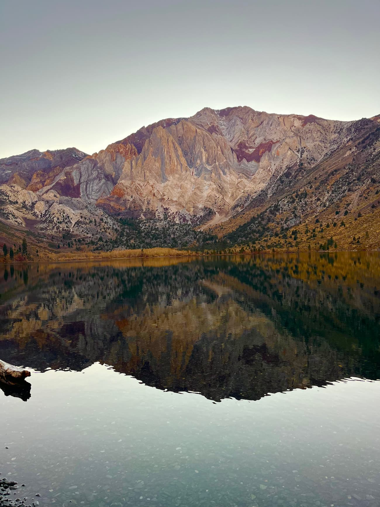
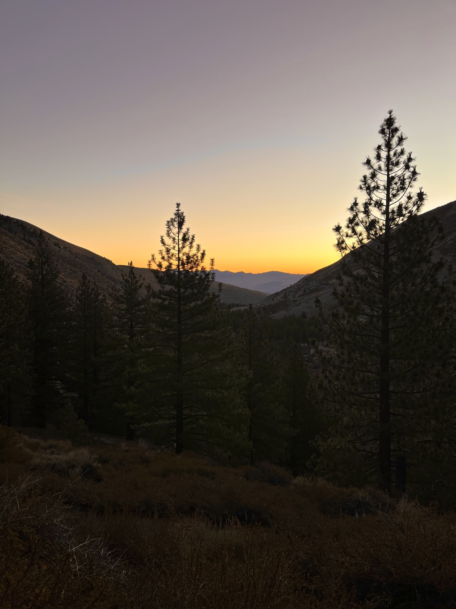
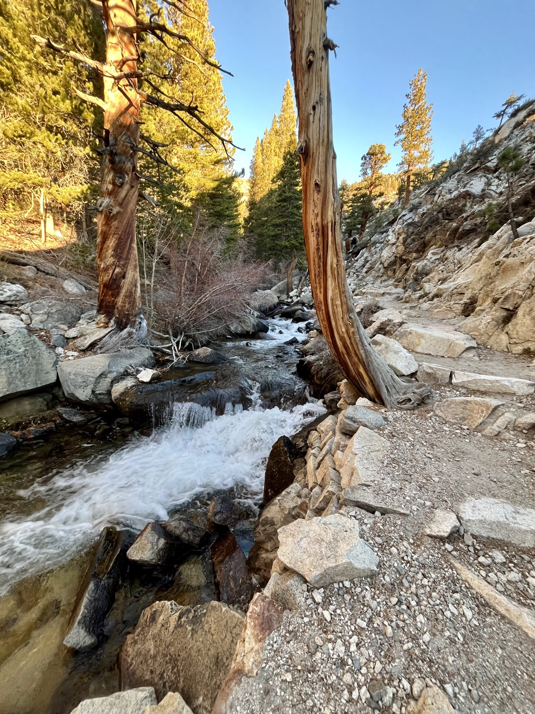
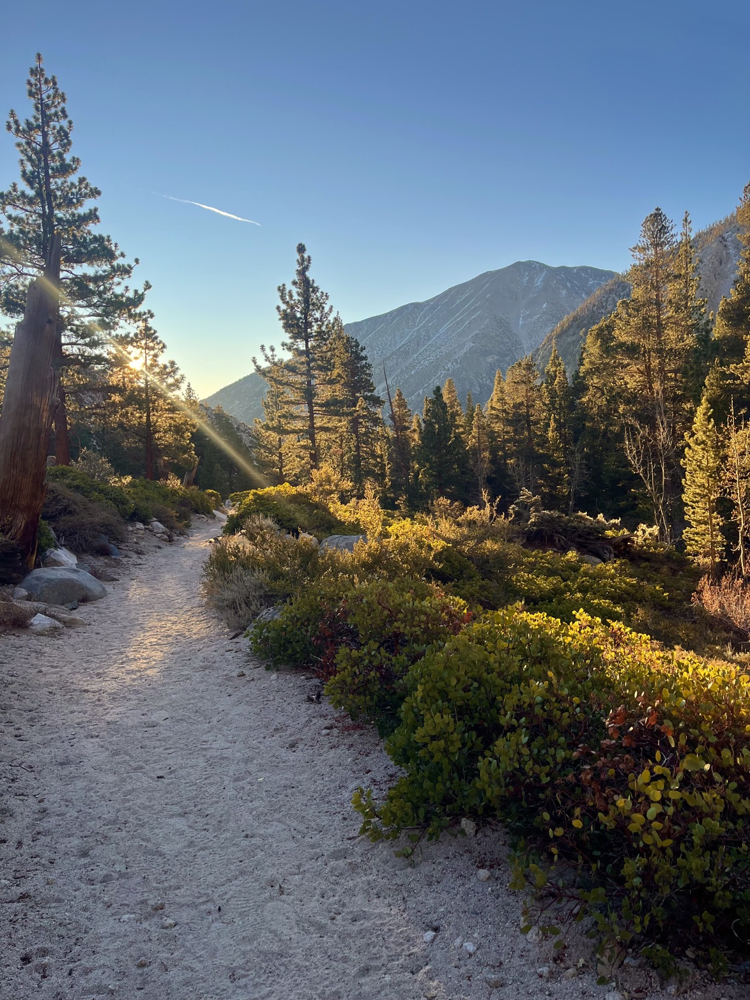
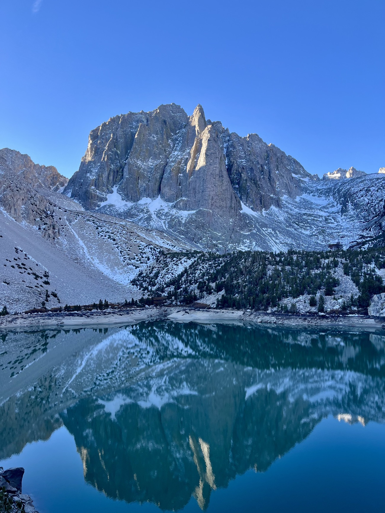
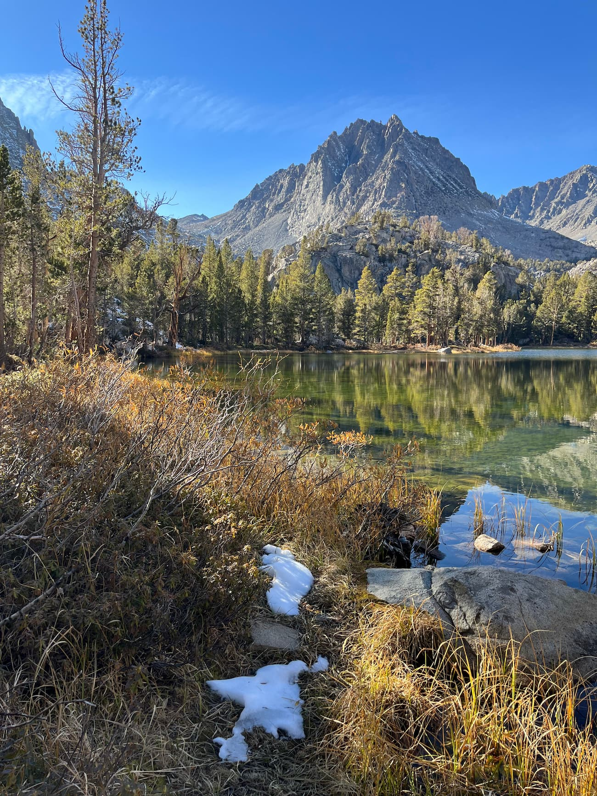
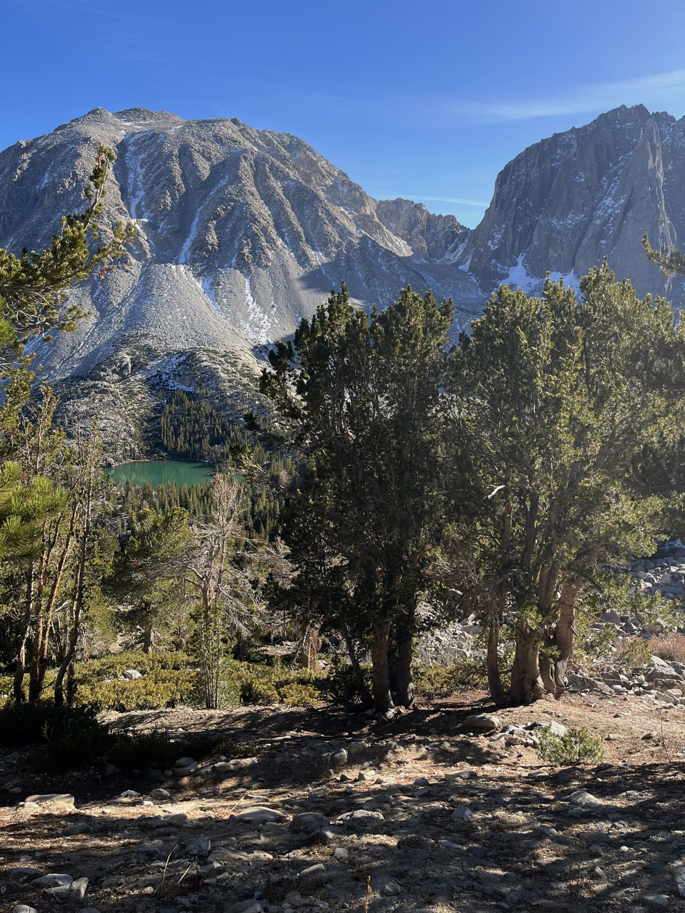
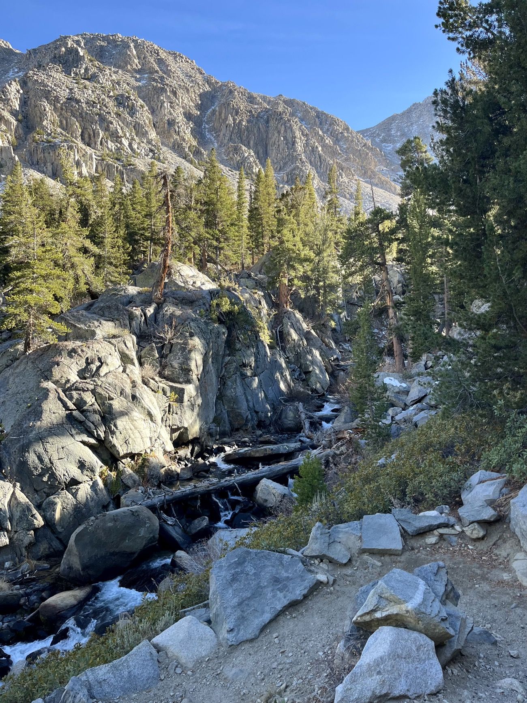
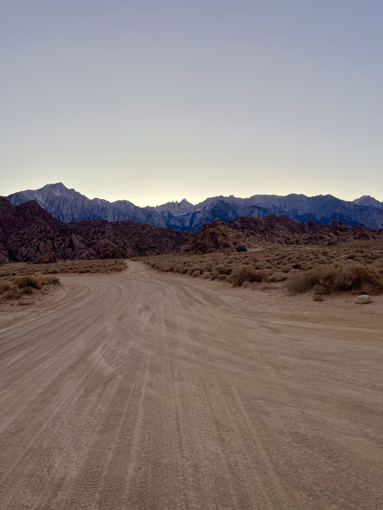

In early November 2025, I began the long drive from San Francisco to the eastern Sierra Nevada. Heavy snowfall in Yosemite's Tioga Pass meant I had to make a roundabout detour north through Lake Tahoe and through Nevada before passing Mono Lake onto Highway 395.
This stretch of highway remains what I consider to be the most beautiful and peaceful road I've driven on in the contiguous United States. First was the June Lakes Loop, which stops by several small lakes with looming peaks of the Sierra in the backdrop (of which Silver Lake was my favorite).
By sunset, I made it to Convict Lake, named after some escaped convicts who hid out next to the lake in the late 1800s. I believe I was two weeks too late to the birch trees still having their beautiful fall colors, as they had completely shed their leaves. Nonetheless, the red hues of Mount Morrison along with evergreens made for a colorful shot.

After around 8 hours of driving, I made it to my lodging in Big Pine. I chose Big Pine as the base for my trip because of its proximity to the hiking trail I'd attempt, despite the fact that Bishop is the hub for the Eastern Sierra.
At 5 AM the following morning, I made the 15 minute drive to the trailhead for the Big Pine Lakes Trail. I consider myself to be well-traveled in the USA, and yet I hadn't heard about this hike until a few weeks before. None of the California natives I had asked had ever heard about this hike either.
I was the only car in the parking lot, and began to speed my way up. I hadn't a clear goal in mind at first, but decided that I wanted to reach Second Lake before the lighting became too harsh. I stopped briefly to admire the sunrise glowing over the distant mountains.

There are several waterfalls in the initial stretch of the trail, which follows a small creek. I didn't stop to take many photos given that I was moving pretty fast and the lighting was still dim, but this will suffice:

Here's another shot of the sun peeking over the mountains. I ended up trailrunning most of the flat stretches on the way up to the first lake on the trail, aptly named First Lake.

I took a quick stop at First Lake, before making it up to view the sun's rays beginning to shine upon Temple Crag, the beautiful, jagged mountain towering over the turquoise-blue water of Second Lake. Having hiked to several alpine lakes before, I can wholeheartedly say that the view I saw here was simply more dramatic and beautiful than the otherwise impressive ones I've seen elsewhere (ex. Lake Sorapis in the Dolomites, Colchuck Lake in Washington State).

I spent several hours resting at this viewpoint, and befriended a couple of hikers who had made the trip out from SoCal. It wasn't until midday when I continued onwards to the remaining lakes of the hike. Here's the view from Fifth Lake, perhaps my second favorite lake of the hike:

Fortunately, I was blessed with perfect weather. It was sunny with clear skies and temperatures in the high 50s. The views were so beautiful that I continued to spend much of my time lounging around and dilly-dallying next to the lakes. Here's a view of First Lake from the north end of the loop.

By late afternoon, I realized that if I was fast enough, I could make it to the Alabama Hills for sunset. And so I decided to trailrun down the remaining stretch of the hike back towards the parking lot. Here's a hastily taken shot of First Falls (yes, whoever named the landmarks along this trail probably didn't put much thought into them).

Around mid-afternoon, I finally reached the parking lot.
Some final metrics from Strava—16.61 mi, 4,131 ft elevation gain to a max elevation of 11,300 ft, 5 hours and 52 minutes of moving time, 35,000 steps, 2.8k calories burned, and an average HR of 120 bpm.
I had enough time left in the day to make the drive down to Lone Pine, where I saw the Martian landscapes of the Alabama Hills and the Mobius Arch. There was a clear view of Mount Whitney, the highest mountain in the contiguous United States:

The following day, I made the drive on 395 back towards San Francisco, this time through Yosemite as Tioga Pass had opened up. I stopped by the world-famous Erick Schat's Bakkerÿ near Bishop. I hadn't a clue how a bakery in the eastern Sierra could receive 2.5 million visitors a year, but the sandwich, bread, and pastries I had were pretty good. I'll definitely be back to try more things when I inevitably return to this stretch of Highway 395.